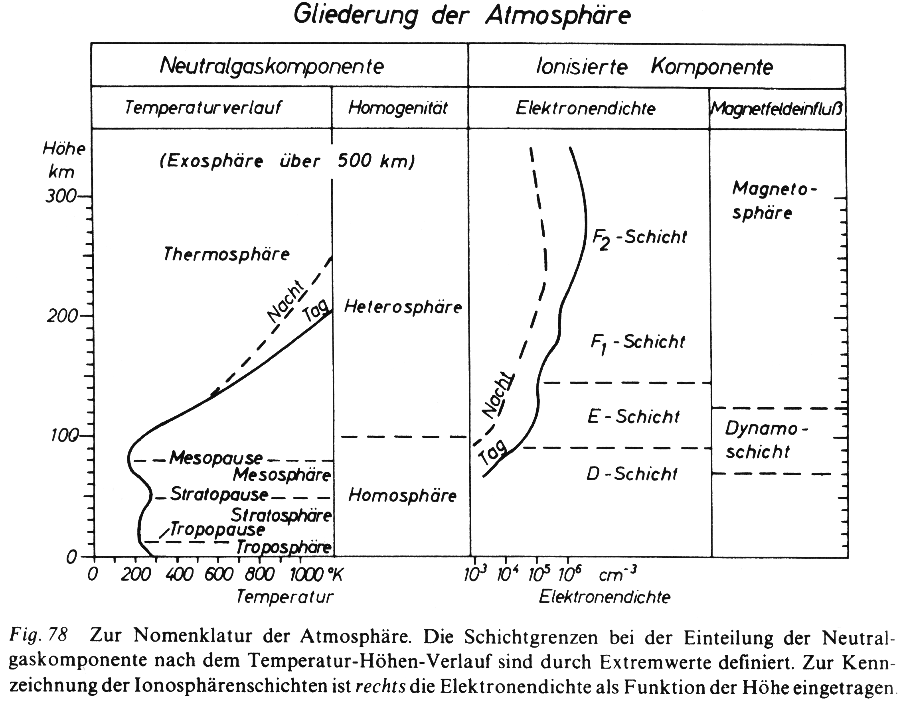
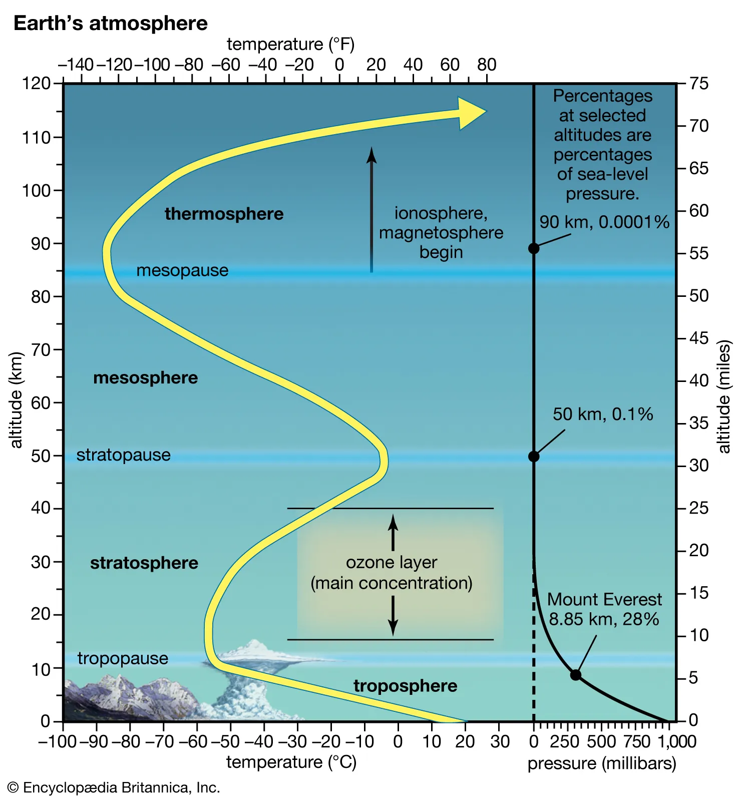

3 Die Atmosphäre der Erde
3.1 Gliederung der Atmosphäre
In Kertz (1971) finden wir die folgende Gliederung der Atmosphäre Abbildung 3.1 hinsichtlich des Temperaturverlaufs, der Homogenität sowie der Elektronendichte. Von großer Bedeutung für die Physik der Hochatmosphäre ist der Magnetfeldeinfluss.
Unterhalb einer Höhe von 50 km befinden sich 99.9 % der Gesamtmasse der Atmosphäre. Die übrigen 0.1 % verteilen sich auf ein Vielfaches des Erdvolumens.
Die Physik der Hochatmosphäre beobachtet Vorgänge in einem stark verdünnten Gas.

3.2 Prinzipien der Einteilung
Die Sonnenstrahlung bewirkt eine teilweise Ionisation der Luft in der oberen Atmosphäre. Daher ist es sinnvoll, für den ionisierten Anteil eine andere Einteilung als für die Neutralgaskomponente zu benutzen.
3.2.1 Neutralgaskomponente
3.2.1.1 Temperaturverlauf
Man unterscheidet
- Troposphäre: Wettergeschehen, beeinflusst durch Wasser, Erdoberfläche und Erdrotation
- Stratosphäre: Geringe vertikale Durchmischung, Strahlungsabsorption des Ozons führt zu Temperaturzunahme
- Mesosphäre: Temperaturabnahme mit zunehmender Höhe bewirkt weniger starke Dichteverringerung
- Thermosphäre: Ansteigende Temperatur
3.2.1.2 Homogenität
Es wird unterschieden zwischen Homo- und Heterosphäre.
In den unteren 100 km ist das Neutralgas bei konstanten Mischungsverhältnissen als Folge von Turbulenzen gut durchmischt.
In der Heterosphäre erfolgt eine Entmischung. Mit zunehmender Höhe treten mehr leichte Teilchen auf. In sehr großen Höhen treten wegen der geringen Dichte keine Stöße zwischen den Teilchen auf. Die Teilchen bewegen sich auf Keplerbahnen oder verlassen den Einflussbereich der Erdanziehung, wenn ihre Geschwindigkeiten die Fluchtgeschwindigkeit übersteigen. Dieser Bereich wird Exosphäre genannt.
Die Entweichmöglichkeit besteht nur für Neutralgasteilchen. Ionisierte Teilchen verhalten sich anders.
3.2.2 Ionisierte Komponente
3.2.2.1 Elektronendichte
3.2.2.2 Magnetfeldeinfluss
Eine etwas andere Darstellung:

3.3 Die Grenze zur Hochatmosphäre
Die Grenze zur Hochatmosphäre ist nicht einheitlich festgelegt. Sie liegt bei \(h > 50\) km.
Warum wird diese Grenze eingeführt? Dies hat verschiedene Gründe, die von der Methode der Erforschung der Atmosphäre, von der Zusammensetzung der Atmosphäre sowie vom Einfluss der solaren Aktivität abhängen.
Vor allem handelt es sich um eine physikalische Einfussgrenze.
3.3.1 Methode der Erforschung
Registrierballons erreichen nur Höhen bis etwa 50 km, darüberhinaus sind entweder nur Momentaufnahmen (etwa wegen der hohen Geschwindigkeit von Forschungsraketen) oder indirekte Beobachtungen möglich.
So geben beispielsweise magnetische Aufzeichungen an der Erdoberfläche Hinweise auf elektrische Ströme in leitfähigen Schichten der Ionosphäre.
Spektren von Polarlichtern geben Hinweise auf die chemische Zusammensetzung.
An der Ionosphäre reflektierte Radiowellen liefern Hinweise auf die Teilchendichte und Windbewegungen.
3.3.2 Luftchemie
In Höhen bis zu 50 km ist die Luft gleichmäßig durchmischt. Ihre Zusammensetzung entspricht der an der Erdoberfläche. Oberhalb von 50 km tritt eine höhendifferenzierte unterschiedliche Luftzusammensetzung auf, die durch Ionisation, Dissoziation und gravitative Entmischung verursacht wird.,
3.3.3 Steuerung durch solare Aktivität
Die Dynamik der unteren Atmosphäre äußert sich in kleinskaligen und kurzzeitigen Wettervorgängen.
Störungen der oberen Atmosphäre sind räumlich ausgedehnter und umfassen mindestens die gesamte Tag- oder Nachtseite der Erde. Verursacht werden sie durch Eruptionen auf der Sonne.
Im Gegensatz dazu werden die Prozesse in der unteren Atmosphäre nicht wesentlich von der solaren Aktivität beeinflusst.
Die Grenze zwischen unterer und oberer Atmosphäre ist eine physikalische Einflussgrenze.
3.4 Aeronomie
Die Physik der Hochatmosphäre wird auch als Aeronomie bezeichnet (im Gegensatz zur Meteorologie als Physik der unteren Atmosphäre). Die wissenschaftliche Dachvereinigung zur Erforschung der Hochatmosphäre ist die IAGA (International Association of Geomagnetism and Aeronomy).